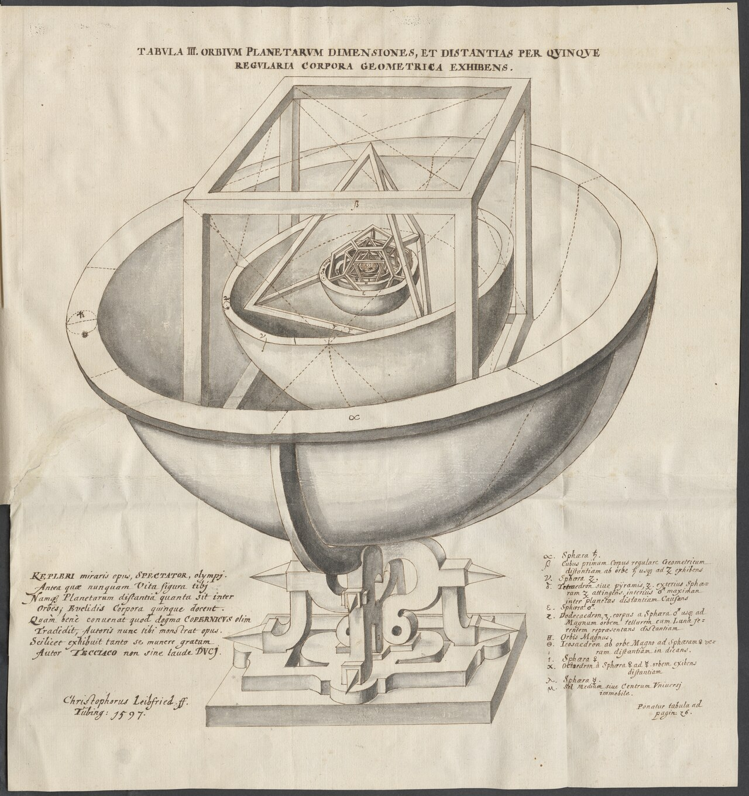

Music of the planets, as described in
Harmonices Mundi (1619)
Accordingly, perfect consonances are found: between the converging movements of Saturn and Jupiter, the octave; between the converging movements of Jupiter and Mars, the octave and minor third approximately; between the converging movements of Mars and the Earth, the fifth; between their perihelial, the minor sixth; between the extreme converging movements of Venus and Mercury, the major sixth; between the diverging or even between the perihelial, the double octave: whence without any loss to an astronomy which has been built, most subtly of all, upon Brahe's observations, it seems that the residual very slight discrepancy can be discounted, especially in the movements of Venus and Mercury.
And so the ratio of plain-song or monody, which we call choral music and which alone was known to the ancients, to polyphony—called "figured song,"; the invention of the latest generations—is the same as the ratio of the consonances which the single planets designate to the consonances of the planets taken together. And so, further on, in Chapters 5 and 6, the single planets will be compared to the choral music of the ancients and its properties will be exhibited in the planetary movements.
— Johannes Kepler, Harmonices Mundi (1619)
